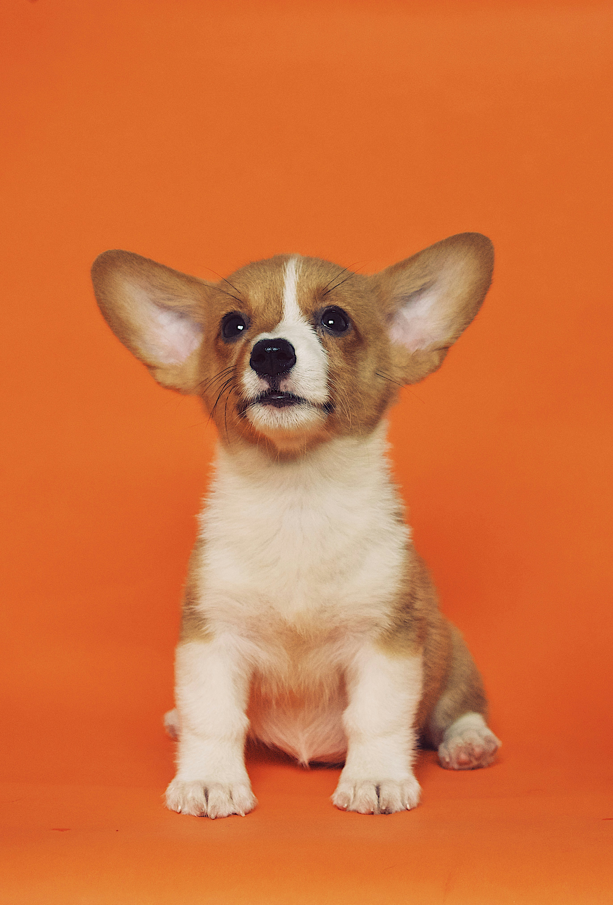

Disponível para adoção
Pipoca 🐶
Quero Adotar o PipocaInformações Rápidas
Idade
2 anos
Sexo
Macho
Porte
Médio
Pelagem
Curta, caramelo
Localização
Patinhas Felizes
📖 História
Pipoca foi encontrado vagando pelas ruas da cidade, magro e assustado. Após ser resgatado pela nossa equipe, recebeu alimentação adequada, acompanhamento veterinário e muito carinho.
Hoje ele está saudável, feliz e pronto para encontrar uma família responsável que possa oferecer amor, segurança e um lar definitivo.
😊 Temperamento
Muito brincalhão e animado
Sociável com pessoas e crianças
Convive bem com outros cães
Adora passeios ao ar livre
Extremamente carinhoso
Aprende comandos com facilidade
Saúde & Cuidados
Pipoca está pronto para ir para casa
Todos os procedimentos veterinários foram realizados antes de ser disponibilizado para adoção.
✂️
Castrado
Sim
💉
Vacinado
Sim
💊
Vermifugado
Sim